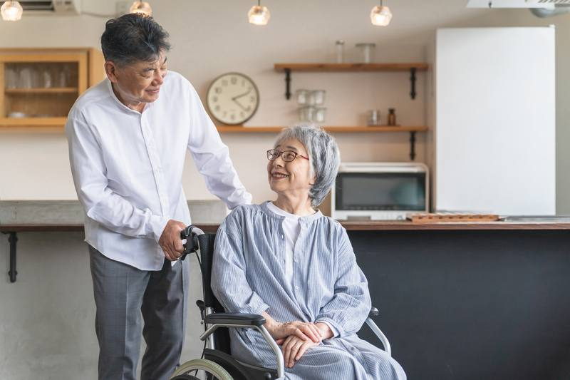

事業所のこと
伺える地域
訪問看護は、
来ていただく仕事ではなく伺う仕事です。
そのため
どこまで行けるかを先に出しておきます。
- ◯◯市
- 全域(車で15分以内)
- ◯◯町・△△市
- 一部(車で20分以内)。
町名でお答えします - エリアの外
- お受けできないことがありますが、近くの事業所をお調べしてお伝えします
- 交通費
- エリア内はいただきません

事業所の概要
- 名称
- つきよみ訪問看護ステーション(架空)
- 所在地
- ◯◯県◯◯市◯◯町2-3-4 ◯◯ビル1階
- 行き方
- ◯◯駅 北口から徒歩8分。駐車場3台。
1階・段差なし - 電話
- 000-0000-0000(24時間受付)
- 受付時間
- 平日 9:00〜18:00は事務所で受けます。
夜間・土日祝は当番の看護師につながります - 休み
- 年末年始のみ。
訪問と電話は365日動いています - 職員
- 看護師6名／理学療法士2名／作業療法士1名／事務1名
- できること
- 24時間対応体制／看取り／小児／精神科訪問看護
※ 数値と体制はサンプルです。
実際の制作では指定申請の内容に合わせます。